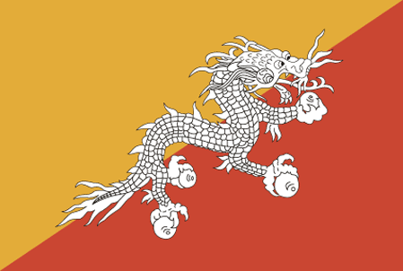
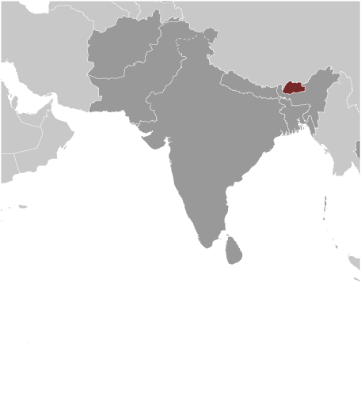
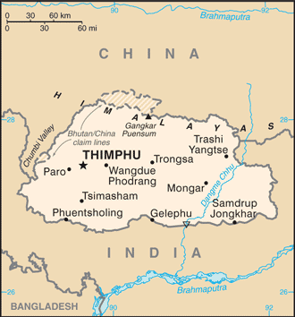

South Asia :: BHUTAN
Introduction :: BHUTAN
-
Following Britain’s victory in the 1865 Duar War, Britain and Bhutan signed the Treaty of Sinchulu, under which Bhutan would receive an annual subsidy in exchange for ceding land to British India. Ugyen WANGCHUCK - who had served as the de facto ruler of an increasingly unified Bhutan and had improved relations with the British toward the end of the 19th century - was named king in 1907. Three years later, a treaty was signed whereby the British agreed not to interfere in Bhutanese internal affairs, and Bhutan allowed Britain to direct its foreign affairs. Bhutan negotiated a similar arrangement with independent India after 1947. Two years later, a formal Indo-Bhutanese accord returned to Bhutan a small piece of the territory annexed by the British, formalized the annual subsidies the country received, and defined India's responsibilities in defense and foreign relations. Under a succession of modernizing monarchs beginning in the 1950s, Bhutan joined the UN in 1971 and slowly continued its engagement beyond its borders.In March 2005, King Jigme Singye WANGCHUCK unveiled the government's draft constitution - which introduced major democratic reforms - and held a national referendum for its approval. In December 2006, the King abdicated the throne in favor of his son, Jigme Khesar Namgyel WANGCHUCK. In early 2007, India and Bhutan renegotiated their treaty, eliminating the clause that stated that Bhutan would be "guided by" India in conducting its foreign policy, although Thimphu continues to coordinate closely with New Delhi. Elections for seating the country's first parliament were completed in March 2008; the king ratified the country's first constitution in July 2008. Bhutan experienced a peaceful turnover of power following parliamentary elections in 2013, which resulted in the defeat of the incumbent party. The disposition of some 18,000 refugees of the roughly 100,000 who fled or were forced out of Bhutan in the 1990s - and who are housed in two UN refugee camps in Nepal - remains unresolved.
Geography :: BHUTAN
-
Southern Asia, between China and India27 30 N, 90 30 EAsiatotal: 38,394 sq kmland: 38,394 sq kmwater: 0 sq kmcountry comparison to the world: 137slightly larger than Maryland; about one-half the size of Indianatotal: 1,136 kmborder countries (2): China 477 km, India 659 km0 km (landlocked)none (landlocked)varies; tropical in southern plains; cool winters and hot summers in central valleys; severe winters and cool summers in Himalayasmostly mountainous with some fertile valleys and savannamean elevation: 2,220 melevation extremes: lowest point: Drangeme Chhu 97 mhighest point: Gangkar Puensum 7,570 mtimber, hydropower, gypsum, calcium carbonateagricultural land: 13.6%arable land 2.6%; permanent crops 0.3%; permanent pasture 10.7%forest: 85.5%other: 0.9% (2011 est.)320 sq km (2012)violent storms from the Himalayas are the source of the country's Bhutanese name, which translates as Land of the Thunder Dragon; frequent landslides during the rainy seasonsoil erosion; limited access to potable waterparty to: Biodiversity, Climate Change, Climate Change-Kyoto Protocol, Desertification, Endangered Species, Hazardous Wastes, Ozone Layer Protectionsigned, but not ratified: Law of the Sealandlocked; strategic location between China and India; controls several key Himalayan mountain passes
People and Society :: BHUTAN
-
758,288 (July 2017 est.)country comparison to the world: 165noun: Bhutanese (singular and plural)adjective: BhutaneseNgalop (also known as Bhote) 50%, ethnic Nepalese 35% (includes Lhotsampas - one of several Nepalese ethnic groups), indigenous or migrant tribes 15%Sharchhopka 28%, Dzongkha (official) 24%, Lhotshamkha 22%, other 26% (includes foreign languages) (2005 est.)Lamaistic Buddhist 75.3%, Indian- and Nepalese-influenced Hinduism 22.1%, other 2.6% (2005 est.)0-14 years: 25.8% (male 99,977/female 95,652)15-24 years: 18.81% (male 72,634/female 70,018)25-54 years: 43.07% (male 173,310/female 153,314)55-64 years: 6.03% (male 24,482/female 21,206)65 years and over: 6.29% (male 24,874/female 22,821) (2017 est.)total dependency ratio: 47.3youth dependency ratio: 40.4elderly dependency ratio: 6.9potential support ratio: 14.5 (2015 est.)total: 27.6 yearsmale: 28.2 yearsfemale: 27.1 years (2017 est.)country comparison to the world: 1431.07% (2017 est.)country comparison to the world: 10417.3 births/1,000 population (2017 est.)country comparison to the world: 1076.5 deaths/1,000 population (2017 est.)country comparison to the world: 1440 migrant(s)/1,000 population (2017 est.)country comparison to the world: 76urban population: 40.1% of total population (2017)rate of urbanization: 2.89% annual rate of change (2015-20 est.)THIMPHU (capital) 152,000 (2014)at birth: 1.05 male(s)/female0-14 years: 1.04 male(s)/female15-24 years: 1.04 male(s)/female25-54 years: 1.14 male(s)/female55-64 years: 1.16 male(s)/female65 years and over: 1.1 male(s)/femaletotal population: 1.09 male(s)/female (2016 est.)148 deaths/100,000 live births (2015 est.)country comparison to the world: 61total: 32.1 deaths/1,000 live birthsmale: 32.3 deaths/1,000 live birthsfemale: 31.8 deaths/1,000 live births (2017 est.)country comparison to the world: 59total population: 70.6 yearsmale: 69.6 yearsfemale: 71.7 years (2017 est.)country comparison to the world: 1581.9 children born/woman (2017 est.)country comparison to the world: 13565.6% (2010)3.6% of GDP (2014)country comparison to the world: 1680.26 physicians/1,000 population (2014)1.8 beds/1,000 population (2012)improved:urban: 100% of populationrural: 100% of populationtotal: 100% of populationunimproved:urban: 0% of populationrural: 0% of populationtotal: 0% of population (2015 est.)improved:urban: 77.9% of populationrural: 33.1% of populationtotal: 50.4% of populationunimproved:urban: 22.1% of populationrural: 66.9% of populationtotal: 49.6% of population (2015 est.)NANANAdegree of risk: highfood or waterborne diseases: bacterial and protozoal diarrhea, hepatitis A, and typhoid fevervectorborne diseases: dengue fever (2016)6.4% (2016)country comparison to the world: 16712.8% (2010)country comparison to the world: 597.4% of GDP (2015)country comparison to the world: 86definition: age 15 and over can read and writetotal population: 64.9%male: 73.1%female: 55% (2015 est.)total: 13 yearsmale: 12 yearsfemale: 13 years (2013)total: 10.7%male: 8.2%female: 12.7% (2015 est.)country comparison to the world: 119
Government :: BHUTAN
-
conventional long form: Kingdom of Bhutanconventional short form: Bhutanlocal long form: Druk Gyalkhaplocal short form: Druk Yuletymology: named after the Bhotia, the ethnic Tibetans who migrated from Tibet to Bhutan; "Bod" is the Tibetan name for their land; the Bhutanese name "Druk Yul" means "Land of the Thunder Dragon"constitutional monarchyname: Thimphugeographic coordinates: 27 28 N, 89 38 Etime difference: UTC+6 (11 hours ahead of Washington, DC, during Standard Time)20 districts (dzongkhag, singular and plural); Bumthang, Chhukha, Chirang, Daga, Gasa, Geylegphug, Ha, Lhuntshi, Mongar, Paro, Pemagatsel, Punakha, Samchi, Samdrup Jongkhar, Shemgang, Tashigang, Tashi Yangtse, Thimphu, Tongsa, Wangdi Phodrang17 December 1907 (became a unified kingdom under its first hereditary king)National Day (Ugyen WANGCHUCK became first hereditary king), 17 December (1907)history: previous governing documents were various royal decrees; first constitution drafted November 2001 - March 2005, ratified 18 July 2008amendments: proposed as a motion by simple majority vote in a joint session of Parliament; passage requires at least a three-fourths majority vote in a joint session of the next Parliament and assented to by the king; amended 2011 (2017)civil law based on Buddhist religious lawhas not submitted an ICJ jurisdiction declaration; non-party state to the ICCtcitizenship by birth: nocitizenship by descent only: the father must be a citizen of Bhutandual citizenship recognized: noresidency requirement for naturalization: 10 years18 years of age; universalchief of state: King Jigme Khesar Namgyel WANGCHUCK (since 14 December 2006); note - King Jigme Singye WANGCHUCK abdicated the throne on 14 December 2006 to his sonhead of government: Prime Minister Tshering TOBGAY (since 27 July 2013)cabinet: Council of Ministers or Lhengye Zhungtshog members nominated by the monarch in consultation with the prime minister and approved by the National Assembly; members serve 5-year termselections/appointments: the monarchy is hereditary but can be removed by a two-third vote of Parliament; leader of the majority party in Parliament is nominated as the prime minister, appointed by the monarchdescription: bicameral Parliament or Chi Tshog consists of the non-partisan National Council or Gyelyong Tshogde (25 seats; 20 members directly elected in single-seat constituencies by simple majority vote and 5 members appointed by the king; members serve 5-year terms) and the National Assembly or Tshogdu (47 seats; members directly elected in single-seat constituencies by proportional representation vote to serve 5-year terms)elections: National Council election last held on 23 April 2013 (next to be held in 2018); National Assembly election first round held on 31 May 2013 and second round on 13 July 2013 ((next to be held in 2018)election results: National Council - seats by party - independent 20 (all candidates required to run as independents); National Assembly - percent of vote by party in first round - DPT 44.5%; PDP 32.5%; DNT 17.0%; DCT 5.9%; percent of vote in second round - PDP 54.9%, DPT 45.1%; seats by party - PDP 32, DPT 15highest court(s): Supreme Court (consists of 5 justices including the chief justice); note - the Supreme Court has sole jurisdiction in constitutional mattersjudge selection and term of office: Supreme Court chief justice appointed by the monarch upon the advice of the National Judicial Commission, a 4-member body to include the Legislative Committee of the National Assembly, the attorney general, the Chief Justice of Bhutan and the senior Associate Justice of the Supreme Court; other judges (drangpons) appointed by the monarch from among the High Court judges selected by the National Judicial Commission; chief justice serves a 5-year term or until reaching age 65 years, whichever is earlier; the 4 other judges serve 10-year terms or until age 65, whichever is earliersubordinate courts: High Court (first appellate court); District or Dzongkhag Courts; sub-district or Dungkhag CourtsBhutan Kuen-Nyam Party or BKP [Dasho Neten ZANGMO]Bhutan Peace and Prosperity Party (Druk Phuensum Tshogpa) or DPT [Pema GYAMTSHO]Druk Chirwang Tshogpa or DCT [Lily WANGCHUK]Druk Nymarup Tshogpa or DNT [Tandin DORJI]People's Democratic Party or PDP [Tshering TOBGAY]Druk National Congress or DNC [Gedun CHOEPHEL] (group in exile)United Front for Democracy or UFD (group in exile)United Front for Democracy Against Dictatorship or UDD [Jatuporn PROMPAN, chairman]other: Buddhist clergy; ethnic Nepali-Bhutanese organizations (exiled)ADB, BIMSTEC, CP, FAO, G-77, IBRD, ICAO, IDA, IFAD, IFC, IMF, Interpol, IOC, IOM (observer), IPU, ISO (correspondent), ITSO, ITU, MIGA, NAM, OPCW, SAARC, SACEP, UN, UNCTAD, UNESCO, UNIDO, UNTSO, UNWTO, UPU, WCO, WHO, WIPO, WMO, WTO (observer)none; note - the Permanent Mission to the UN for Bhutan has consular jurisdiction in the US; the permanent representative to the UN is Kunzang C. NAMGYEL (since February 2014); address: 343 East 43rd Street, New York, NY 10017; telephone [1] (212) 682-2268; FAX [1] (212) 661-0551consulate(s) general: New Yorkthe US and Bhutan have no formal diplomatic relations, although frequent informal contact is maintained via the US embassy in New Delhi (India) and Bhutan's Permanent Mission to the UNdivided diagonally from the lower hoist-side corner; the upper triangle is yellow and the lower triangle is orange; centered along the dividing line is a large black and white dragon facing away from the hoist side; the dragon, called the Druk (Thunder Dragon), is the emblem of the nation; its white color stands for purity and the jewels in its claws symbolize wealth; the background colors represent spiritual and secular powers within Bhutan: the orange is associated with Buddhism, while the yellow denotes the ruling dynastythunder dragon known as Druk Gyalpo; national colors: orange, yellowname: "Druk tsendhen" (The Thunder Dragon Kingdom)lyrics/music: Gyaldun Dasho Thinley DORJI/Aku TONGMInote: adopted 1953
Economy :: BHUTAN
-
Bhutan's small economy is based largely on hydropower, agriculture, and forestry, which provide the main livelihood for more than half of the population. Because rugged mountains dominate the terrain and make the building of roads and other infrastructure difficult and expensive, industrial production is primarily of the cottage industry type. The economy is closely aligned with India's through strong trade and monetary links and is dependent on India for financial assistance and migrant laborers for development projects, especially for road construction. Bhutan inked a pact in December 2014 to expand duty-free trade with Bangladesh.Multilateral development organizations administer most educational, social, and environment programs, and take into account the government's desire to protect the country's environment and cultural traditions. For example, the government, in its cautious expansion of the tourist sector, encourages visits by upscale, environmentally conscientious tourists. Complicated controls and uncertain policies in areas such as industrial licensing, trade, labor, and finance continue to hamper foreign investment.Bhutan’s largest export - hydropower to India - could spur sustainable growth in the coming years if Bhutan resolves chronic delays in construction. Bhutan’s hydropower exports comprise 40% of total exports and 25% of GDP. Bhutan currently taps only 6.5% of its 24,000-megawatt hydropower potential and is behind schedule in building 12 new hydropower dams with a combined capacity of 10,000 megawatts by 2020 in accordance with a deal signed in 2008 with India. The high volume of imported materials to build hydropower plants has expanded Bhutan's trade and current account deficits. Bhutan also is exploring energy exports to Bangladesh.$6.508 billion (2016 est.)$6.049 billion (2015 est.)$5.638 billion (2014 est.)note: data are in 2016 dollarscountry comparison to the world: 167$2.121 billion (2016 est.)6.2% (2016 est.)6.1% (2015 est.)4% (2014 est.)country comparison to the world: 24$8,200 (2016 est.)$7,900 (2015 est.)$7,500 (2014 est.)note: data are in 2016 dollarscountry comparison to the world: 14933.4% of GDP (2016 est.)32% of GDP (2015 est.)35% of GDP (2014 est.)country comparison to the world: 71household consumption: 54.7%government consumption: 17.9%investment in fixed capital: 50.1%investment in inventories: -0.1%exports of goods and services: 29.4%imports of goods and services: -52.1% (2016 est.)agriculture: 16.4%industry: 42.2%services: 41.4% (2016 est.)rice, corn, root crops, citrus; dairy products, eggscement, wood products, processed fruits, alcoholic beverages, calcium carbide, tourism5.3% (2016 est.)country comparison to the world: 45353,000note: major shortage of skilled labor (2015 est.)country comparison to the world: 161agriculture: 58%industry: 20%services: 22% (2015 est.)3.2% (2016 est.)2.6% (2014 est.)country comparison to the world: 2313.3% (2012 est.)lowest 10%: 2.8%highest 10%: 30.6% (2012)38.8 (2012)38.1 (2007)country comparison to the world: 69revenues: $650.9 millionexpenditures: $713.7 millionnote: the government of India finances nearly one-quarter of Bhutan's budget expenditures (2016 est.)30.8% of GDP (2016 est.)country comparison to the world: 76-3% of GDP (2016 est.)country comparison to the world: 118106.8% of GDP (2016 est.)91.5% of GDP (2015 est.)country comparison to the world: 161 July - 30 June3.9% (2016 est.)4.5% (2015 est.)country comparison to the world: 168NA%14.15% (31 December 2016 est.)14.15% (31 December 2015 est.)country comparison to the world: 51$769 million (31 December 2016 est.)$669.9 million (31 December 2015 est.)country comparison to the world: 159$1.379 billion (31 December 2016 est.)$1.174 billion (31 December 2015 est.)country comparison to the world: 166$1.17 billion (31 December 2016 est.)$1.031 billion (31 December 2015 est.)country comparison to the world: 165$355.3 million (31 December 2015)$283.4 million (31 December 2012)country comparison to the world: 115$-618 million (2016 est.)$-571.7 million (2015 est.)country comparison to the world: 105$495.3 million (2016 est.)$581.5 million (2015 est.)country comparison to the world: 171electricity (to India), ferrosilicon, cement, cardamom, calcium carbide, steel rods/bars, dolomite, gypsumIndia 95.7% (2016)$1.033 billion (2016 est.)$1.009 billion (2015 est.)country comparison to the world: 180fuel and lubricants, airplanes, machinery and parts, rice, motor vehiclesIndia 91.1% (2016)$2.355 billion (31 December 2016 est.)$1.955 billion (31 December 2015 est.)country comparison to the world: 149$168.4 million (31 December 2016 est.)$238 million (31 December 2015 est.)country comparison to the world: 128ngultrum (BTN) per US dollar -67.195 (2016 est.)67.2 (2015 est.)64.15 (2014 est.)61.03 (2013 est.)53.44 (2012 est.)
Energy :: BHUTAN
-
population without electricity: 187,531electrification - total population: 76%electrification - urban areas: 100%electrification - rural areas: 53% (2012)7.732 billion kWh (2015 est.)country comparison to the world: 1112.6 billion kWh (2015 est.)country comparison to the world: 1415.308 billion kWh (2015 est.)country comparison to the world: 34200 million kWh (2015 est.)country comparison to the world: 941.631 million kW (2015 est.)country comparison to the world: 1191% of total installed capacity (2015 est.)country comparison to the world: 2110% of total installed capacity (2015 est.)country comparison to the world: 5899% of total installed capacity (2015 est.)country comparison to the world: 30% of total installed capacity (2015 est.)country comparison to the world: 1710 bbl/day (2016 est.)country comparison to the world: 1150 bbl/day (2014 est.)country comparison to the world: 1000 bbl/day (2014 est.)country comparison to the world: 1040 bbl (1 January 2017 es)country comparison to the world: 1140 bbl/day (2014 est.)country comparison to the world: 1233,000 bbl/day (2015 est.)country comparison to the world: 1890 bbl/day (2014 est.)country comparison to the world: 1373,135 bbl/day (2014 est.)country comparison to the world: 1770 cu m (2016 est.)country comparison to the world: 1140 cu m (2016 est.)country comparison to the world: 1620 cu m (2016 est.)country comparison to the world: 750 cu m (2016 est.)country comparison to the world: 980 cu m (2016 est.)country comparison to the world: 120260,300 Mt (2015 est.)country comparison to the world: 197
Communications :: BHUTAN
-
total subscriptions: 21,081subscriptions per 100 inhabitants: 3 (July 2016 est.)country comparison to the world: 176total: 698,373subscriptions per 100 inhabitants: 93 (July 2016 est.)country comparison to the world: 165general assessment: urban towns and district headquarters have telecommunications servicesdomestic: domestic service inadequate, especially in rural areas; mobile-cellular service, begun in 2003, is now widely available; Internet services widely availableinternational: country code - 975; international telephone and telegraph service via landline and microwave relay through India; satellite earth station - 1 Intelsat (2016)state-owned TV station established in 1999; cable TV service offers dozens of Indian and other international channels; first radio station, privately launched in 1973, is now state-owned; 5 private radio stations are currently broadcasting (2012).bttotal: 313,347percent of population: 41.8% (July 2016 est.)country comparison to the world: 155
Transportation :: BHUTAN
-
number of registered air carriers: 2inventory of registered aircraft operated by air carriers: 6annual passenger traffic on registered air carriers: 162,864annual freight traffic on registered air carriers: 538,041 mt-km (2015)A5 (2016)2 (2013)country comparison to the world: 198total: 21,524 to 2,437 m: 1914 to 1,523 m: 1 (2017)total: 1914 to 1,523 m: 1 (2012)total: 10,578 kmpaved: 2,975 km (includes 2,180 km of national highways)unpaved: 7,603 km (2013)note: a more recent figure for 2015 lists 11,177 km for total roadway length, but no breakdown of paved or unpavedcountry comparison to the world: 135
Military and Security :: BHUTAN
-
Royal Bhutan Army (includes Royal Bodyguard and Royal Bhutan Police) (2009)18 years of age for voluntary military service; no conscription; militia training is compulsory for males aged 20-25, over a 3-year period (2012)
Transnational Issues :: BHUTAN
-
lacking any treaty describing the boundary, Bhutan and China continue negotiations to establish a common boundary alignment to resolve territorial disputes arising from substantial cartographic discrepancies, the most contentious of which lie in Bhutan's west along China’s Chumbi salient